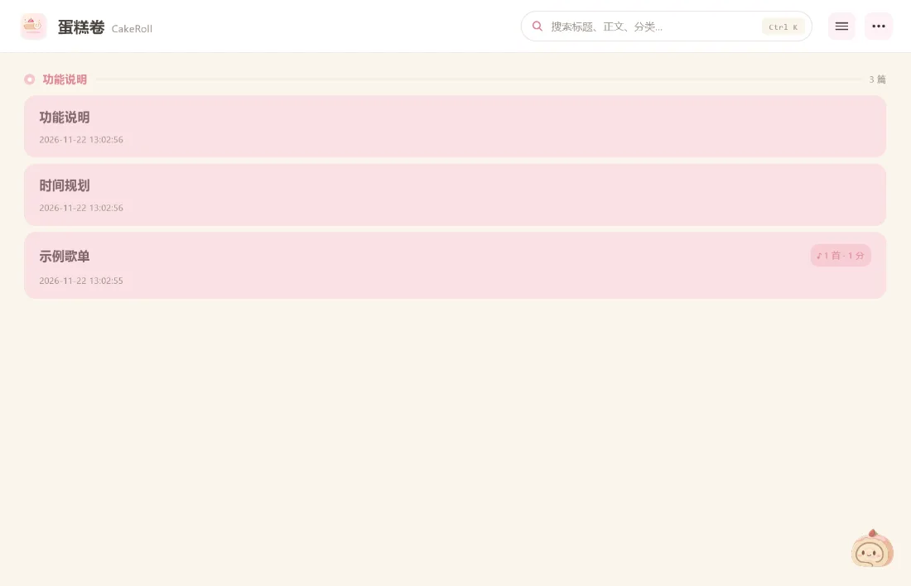
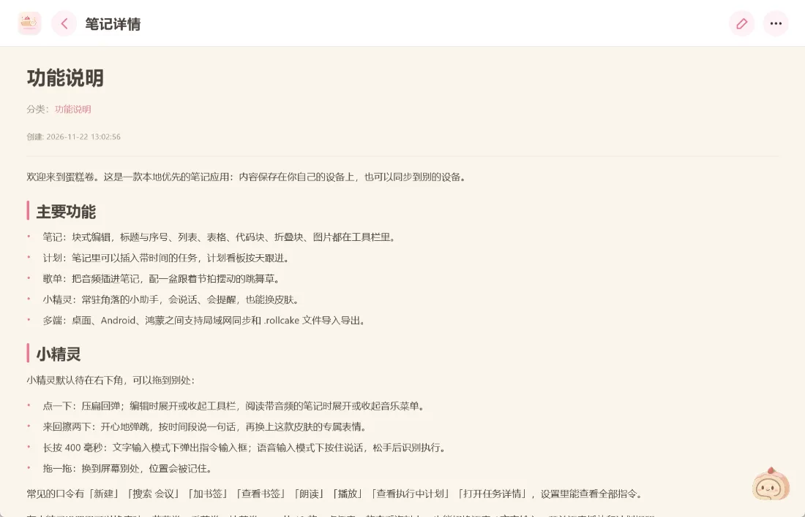
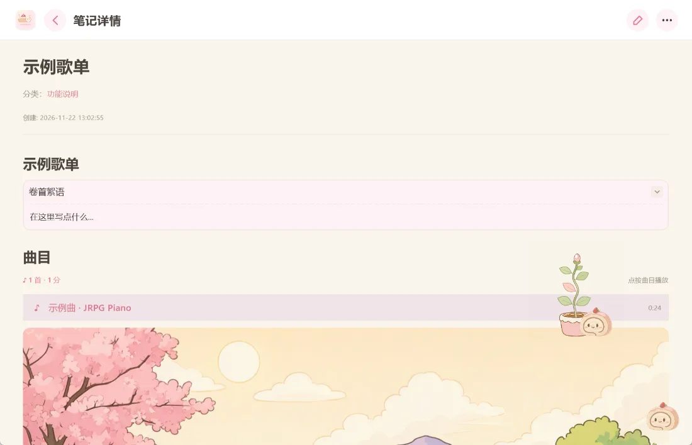
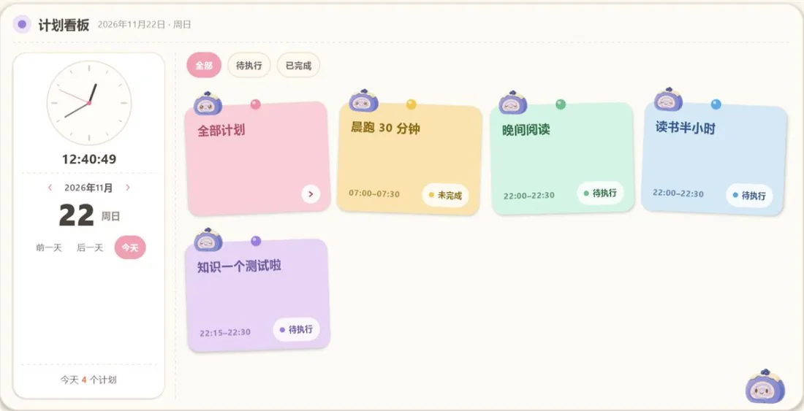
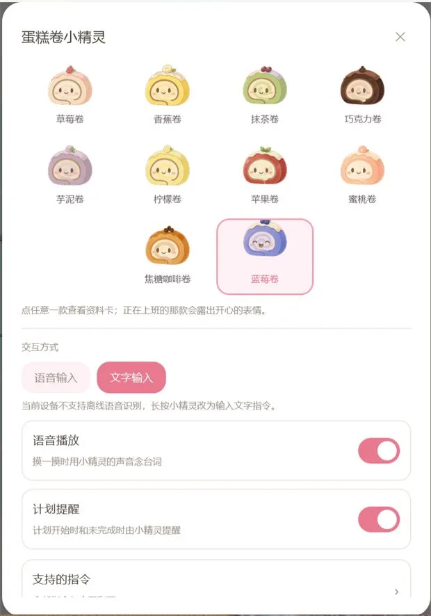
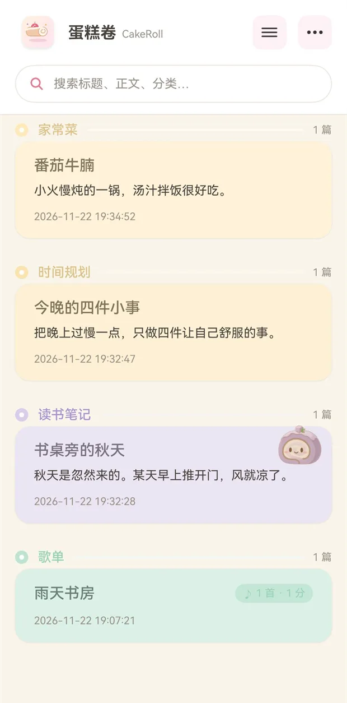
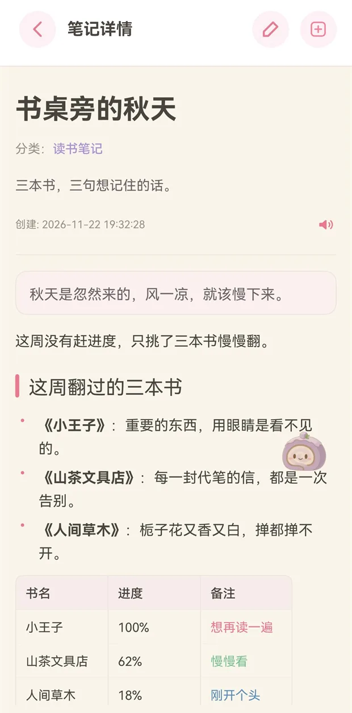
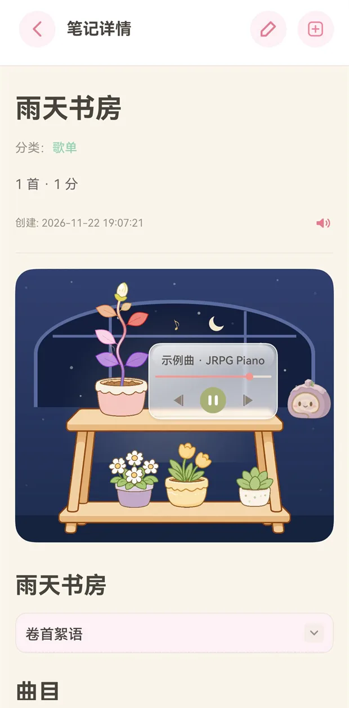
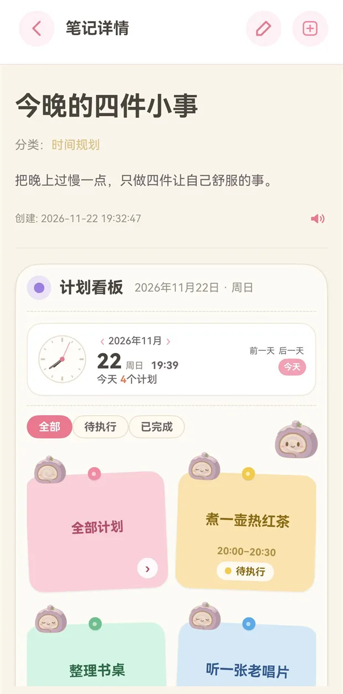

本地优先，不需要账号
笔记保存在本机数据库，不注册、不登录，也没有开发者云端。删不删、备份到哪，都由你决定。
笔记保存在本机数据库，不注册、不登录，也没有开发者云端。删不删、备份到哪，都由你决定。
标题与序号、列表、表格、代码块、折叠块、图片，都在工具栏里随手插入，读起来清清爽爽；正文兼容 Markdown 格式。
在笔记里插入带时间的任务，按天查看计划看板；任务开始或未完成时，小精灵会来提醒。
把音频插进笔记，它就变成歌单；播放时，魔性的跳舞草也会跟着旋律摇摆哦~
十款蛋糕卷皮肤，会说话、能听指令，也能被你拖到屏幕任意角落；闲置时就在旁边安静待着。
一台设备打开同步服务，另一台扫码或输入网址就能同步。数据只在你的设备之间走，没有云端中转。
导出为 .rollcake 文件，笔记和音频打包在一起；换设备或做备份，一个文件就够了。
内置 MCP 服务，Claude、Cursor、Qoder 等客户端可以直接创建和更新笔记；默认关闭，写入前会请你审批。
下面是桌面端与手机端的真实界面。截图均来自应用内部。
按分类分组，标题和更新时间排得整整齐齐。带音频的笔记会标出曲目数量，搜索框可以直接找标题、正文和分类。

打开笔记默认是干净的阅读态；点右上角的铅笔才进入编辑。标题、列表、表格、代码块、折叠块和图片，都在块工具栏里。

音频以曲目行的形式待在你写下的位置。点一下就开始播放，跳舞草会跟着节奏摆动。

计划任务带时间，按天汇总成彩色卡片：待执行、已完成、未完成一目了然。左侧有日期和时钟，前后翻一天就行。

手机端复刻了桌面端的笔记、计划、歌单与小精灵。支持离线语音指令和听写，也能和电脑通过局域网同步。
草莓卷、抹茶卷、芋泥卷、蓝莓卷……每一款都有自己的表情和配音。点一下会弹一下，来回蹭两下会开心地跳；长按还能用语音或文字给它下指令。





第一版从 Windows 桌面端开始，移动端准备中；各端共用同一种数据格式。
免费下载。笔记、计划、歌单、小精灵和局域网同步都能直接使用；额外换装是可选外观，不影响任何功能。
手机端支持笔记、计划、歌单、小精灵与局域网同步。离线语音识别与系统朗读由系统能力提供。
换设备、换平台时，用 .rollcake 文件或局域网同步即可带走全部内容。
不注册，不配置云端；打开就能写，需要时再逐步把设备连起来。
首次启动自带几篇说明和示例，读完可以随手删掉。新建笔记时选个模板，或者从空白开始。
在设置里开启局域网共享，另一台设备扫码或输入网址；选择要同步的笔记，音频也会一起过去。
插入音频就生成歌单；在笔记里插入带时间的计划任务，用看板按天跟进。
在设置里开启 MCP，把带令牌的配置复制到支持 MCP 的客户端，让 AI 帮你整理记录。
不需要。蛋糕卷没有账号系统，也没有开发者云端；第一次打开就能直接写。
不会。默认只在本地读写。只有你主动开启局域网共享、网页导入或 MCP，数据才会按你指定的范围流动；开发者没有接收这些数据的服务器。
在新设备导入导出的 .rollcake 文件，或者在同一个局域网里同步过去，内容会一起带过去。
鸿蒙端使用系统的离线语音识别能力，录音不需要离开设备；桌面端目前使用文字输入。小精灵的语音播报也走系统语音合成。
任何支持 MCP 的客户端都可以，例如 Claude、Cursor、Qoder。配置只保存在你的设备上，服务默认关闭，开启后仍需逐个请求审批。